Computational tools & app building
How I began with AI-assisted tools, learned basic Python, and slowly turned some of my ideas into working projects.
1. How I started
I did not begin by learning how to code. I first became interested in making apps through GPTers, an online learning community where I learned about AI-assisted app building.
I could describe an idea and use AI tools to help make something that worked. However, I often did not understand the code behind it. When an error appeared, I did not know what the message meant or which part I should change. This became a clear limit for me.
At the beginning of summer break in June 2026, I returned to Korea to prepare for my research internship with Professor WooJin Chung. Soon after I returned, I completed two Python courses on Coursera: Programming for Everybody (Getting Started with Python) and Python Data Structures.
The courses introduced me to variables, conditions, functions, loops, strings, files, lists, dictionaries, and tuples. I was still a beginner after finishing them, and I could not write a complete app by myself. However, I could understand more of the logic behind code and follow technical steps more carefully when I later worked on research and app projects.
2. Learning through GPTers
During summer break in 2025, I was having tea with a family friend at a café. She had already spent a lot of time learning about AI tools on her own, and one of her younger relatives was also taking part in an online AI study group. She told me that I should try it too. I said yes before thinking very carefully about it. Afterward, I kept wondering whether I could really do it because I was not comfortable with technology and had never learned Python.
Part of my reason was simple: I was looking for a project that I could continue outside school. Some of my early ideas included an emotion-recording app and simple tools that older adults could use, but I did not have one clear plan yet. Starting with vibe coding seemed like a way to try these ideas even though I did not know how to write code.
Most of the study was online. We usually met once a week on Zoom, and members showed what they had made. The study leader sometimes introduced a new tool and gave advice about our projects. If I could not attend because of another activity, I could watch the recorded meeting later. The leader also gave me individual feedback on some of my work.
I completed my first GPTers AI study in summer 2025. During Education App Building, I began thinking about an SAT study app. During Game Vibe Coding, I developed ideas for a soccer lineup tool and for interactive activities that later helped me build four mindfulness apps for my Global Mindfulness Hub. I also attended a study about brain-science apps, although I did not receive a certificate for it.
I was probably one of the youngest people in the study groups. Most of the other members were adults with different jobs and experiences. They came from many different fields, including education, medicine, art, and caregiving. There were also many people whose work and experiences were very different from mine. Seeing so many different ideas, apps, and games felt like entering a new world to me. I sometimes felt awkward during the Zoom meetings, so I joined with a rabbit avatar instead of showing my face. Even so, I liked listening to the other members. Hearing why they wanted to make something was often more helpful to me than hearing only how to make it.
One participant living in the United States worked as a caregiver at a nursing home for Korean older adults. She said that many residents felt very lonely, so she wanted to make an app for them. Another participant was making an app for his mother. His mother could press a button and listen to messages that he had recorded for her. I especially remembered these two ideas. They made me think that an app did not need to begin with a big plan. It could begin with one person the maker wanted to help. I began to think that I would like to make something like that for my mother someday. I also want to make something for my younger brother, based on what he actually enjoys and would want to use, not only what I think would be good for him.
During a brain-science app study, a neuroscience postdoctoral researcher showed an app based on brain science that ordinary people could use for brain health. I did not understand all of the science behind it, but it showed me that a research idea could become something that other people could actually try.
I was also interested when I saw projects connecting technology with media art. I hope that someday I can present my own research results through media art instead of using only papers and graphs. I have not learned how to do this yet, but I would like to study it more seriously when I have the opportunity in college.
I first tried Cursor and other AI app-building tools. Later, I used Claude and Claude Code and learned how GitHub and Vercel could be used to save and publish a project. Outside the study meetings, I bought books and tried learning Google Apps Script and Firebase by myself. Google Apps Script later helped me make a survey app for my early theater research.
Vibe coding made me less afraid to start. However, I also felt its limits. When the code stopped working, I often did not understand the error or know which part I should change. I began to think that understanding some code would help me use these tools more carefully. This was one reason I later decided to study basic Python.
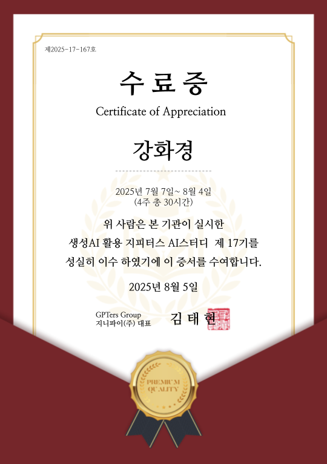
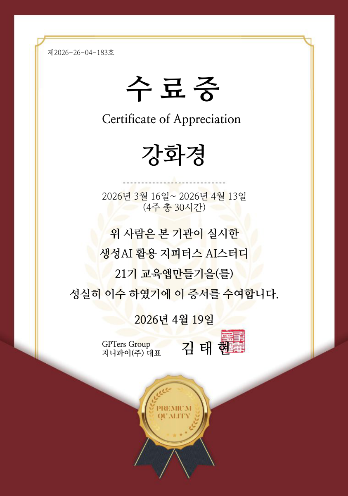
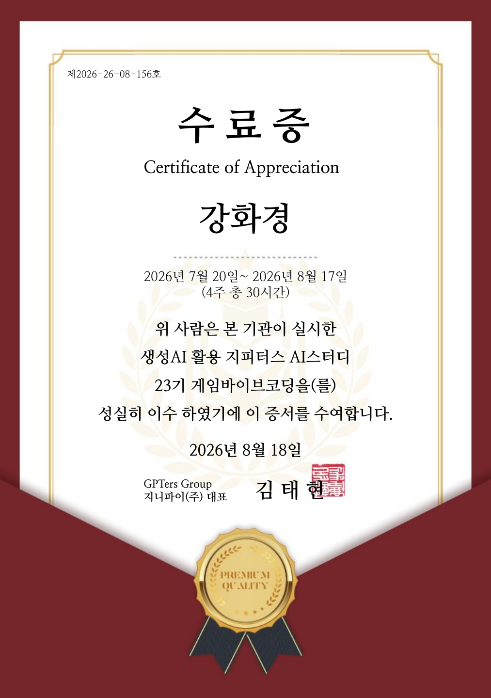
Three GPTers AI study certificates. I completed a general AI study in summer 2025, Education App Building in spring 2026, and Game Vibe Coding in summer 2026. Each was a four-week, 30-hour program.
3. Python courses and certificates
- Programming for Everybody (Getting Started with Python) — University of Michigan, Coursera
- Python Data Structures — University of Michigan, Coursera
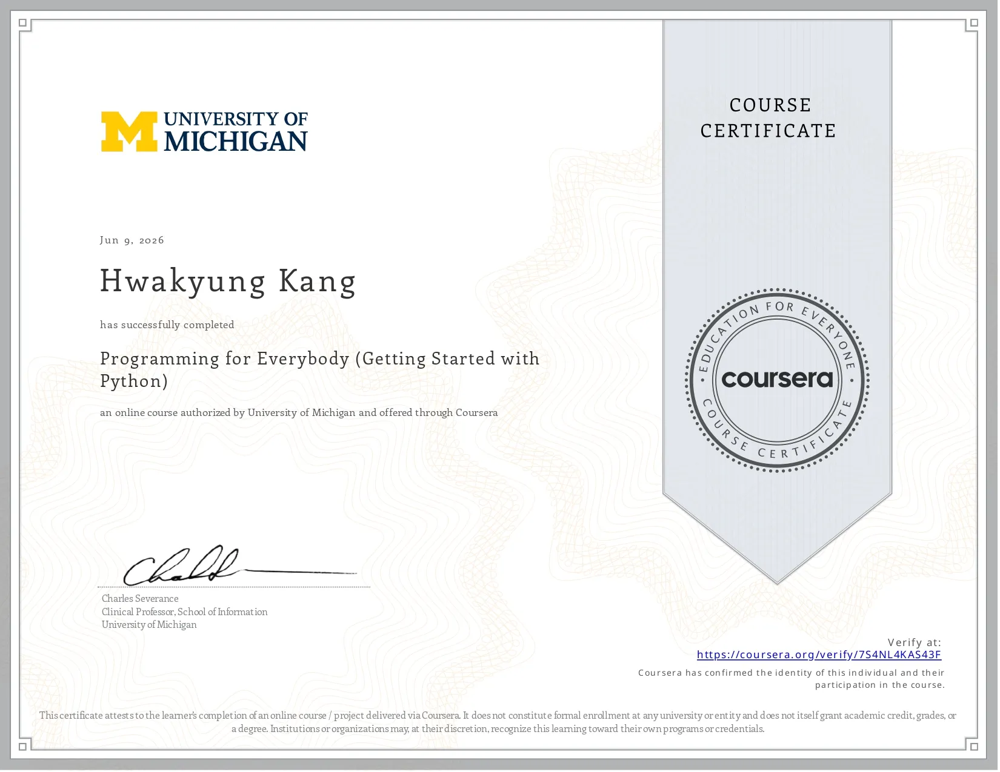
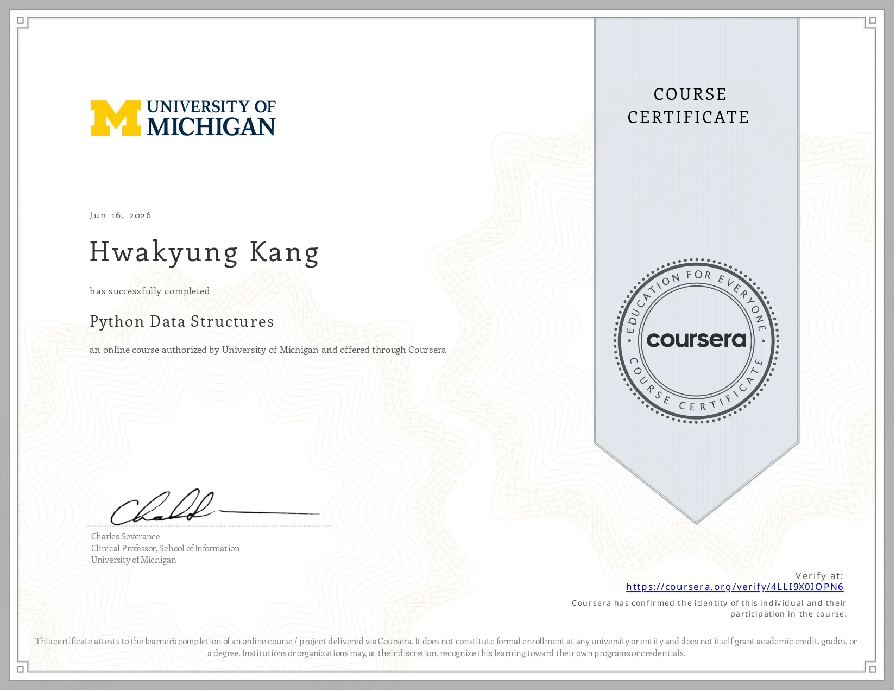
Course notes from two Python courses
Chapter 1
Introduction to Programming
Programmer: Works as an intermediary between the hardware and the user.
A common challenge for a beginning Python programmer is understanding indentation and its role in Python syntax.
In the fetch stage, the fetch-execute cycle gets instructions from memory.
Output devices: screen, speakers, printer, DVD burner
Input devices: keyboard, mouse, touch screen
Central Processing Unit: a highly developed circuit with many transistors. It runs programs and always wonders, “What should I do next?” It is very dumb and very fast. It performs arithmetic and logical operations on data.
Main memory: fast, small, and temporary storage. Example: RAM
Secondary memory: slower, larger, and permanent storage. Examples: disk drive, memory stick
The machine language of a computer consists of 0s and 1s.
We write Python → it is translated into machine language → it runs using the main memory and CPU.
Pythonistas: people who use Python.
Guido van Rossum began developing Python in 1989.
Syntax error: It means that Python is lost because the code does not follow its rules.
Elements of Python
- Vocabulary / words: variables and reserved words
- Sentence structure: valid syntax patterns
- Story structure: constructing a program for a purpose
- Reserved words: words that cannot be used as variables or identifiers
Interactive Python is good for experiments and programs that are three or four lines long. Most programs are much longer, so we type them into a file and tell Python to run the commands in the file.
Interactive: I type directly into Python one line at a time, and it responds.
Script: I enter a sequence of statements into a file using a text editor and tell Python to execute the statements in the file.
A program is sequential. Some steps are conditional and may be skipped. Other steps are repeated.
Repeated steps: loops that have iteration variables that change each time through the loop.
Chapter 2
Variables and Expressions
Constants are a big part of any programming language.
Constants:
- Fixed values such as numbers, letters, and strings
- The values of constants do not change
- Numeric constants: 1, 3, 4, etc.
- String constants use single quotes (') or double quotes (")
Variable name: a named place in memory where a programmer can store data and later get the data back by using the variable name.
Programmers choose the names of variables, such as x and y. They can change the value stored in a variable in a later statement.
Python variable name rules: A variable name must start with a letter or underscore. It can contain letters, numbers, and underscores.
Sentences or lines
Assignment statement: x = 2
Assignment with an expression: x = x + 2
Print statement: print(x)
Variable: x
Assignment operator: =
Arithmetic operator: +
Constant: 2
Function: print
Mnemonic variable names are descriptive names that are easier for people to understand.
A variable is a memory location used to store a value. The value stored in a variable can be changed by replacing the old value with a new one.
Assignment statement example: x = 3.9 * x * (1 - x)
- We assign a value to a variable by using an assignment statement (=).
- An assignment statement has an expression on the right side and a variable that stores the result on the left side.
Numerical expressions: Python uses symbols to express common math operations.
Addition: +
Subtraction: -
Multiplication: *
Division: /
Power: **
Remainder: %
Operator precedence, or order of evaluation: When we use several operators together, Python must know which one to do first.
Operator precedence rules, from highest to lowest:
- Parentheses
- Exponentiation
- Multiplication, division, and remainder
- Addition and subtraction
- Left to right when the operators have the same precedence
In Python, variables, literals, and constants have a type.
Python knows the difference between a number and a string. For example, + means addition when the values are numbers. It means concatenation when the values are strings.
We cannot add the number 1 to a string. We can ask Python about the type of something by using the type() function.
Types of numbers
- Integers: whole numbers, such as -14, -2, 0, 1, and 100
- Floating-point numbers: numbers with decimal parts, such as -2.5, 0.4, and 98.6
Type conversion: When an integer and a floating-point number are used in the same expression, Python usually converts the integer into a floating-point number. I can also control the conversion by using functions such as int() and float().
Regular division using / produces a floating-point result.
String conversion: I can use int() and float() to convert a string containing a number into an integer or floating-point number. I will get an error if the string does not contain the right numeric characters.
User input: The input() function tells Python to pause and read data from the user. The input() function returns a string.
Comments in Python: Anything after # is ignored by Python.
A comment can describe what will happen in a sequence of code or record who wrote the code and other information. It can also temporarily turn off a line of code.
Converting user input: If we want to read a number from the user, we must convert the input from a string into a number by using a type conversion function.
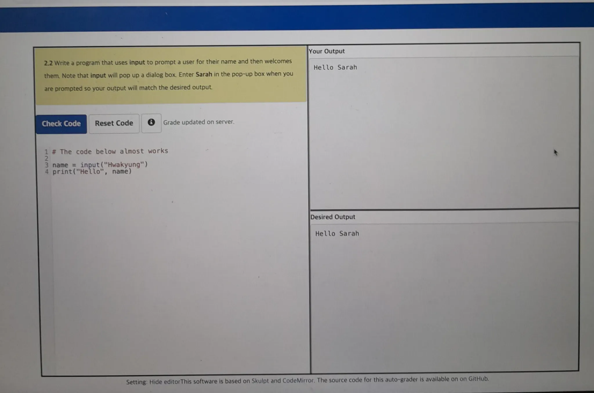
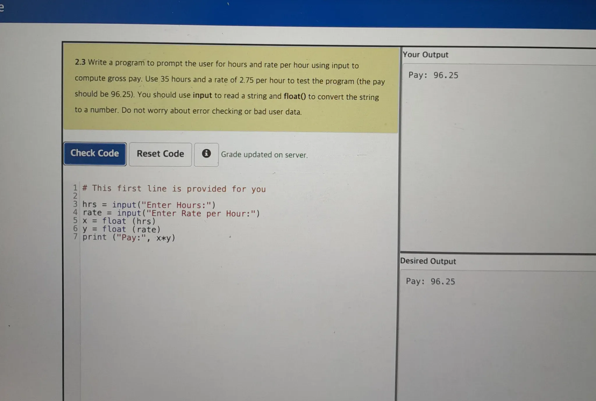
Chapter 3
Conditional Execution
Comparison operators
- Boolean expressions ask a question and produce a Yes or No result. We use the result to control the flow of a program.
- Comparison operators evaluate whether something is True or False.
- They look at variables but do not change their values.
| Python | Meaning |
|---|---|
| < | Less than |
| <= | Less than or equal to |
| == | Equal to |
| >= | Greater than or equal to |
| > | Greater than |
| != | Not equal to |
The single = is used for assignment. The double == is used to compare two values.
Conditional statements
In Python, indentation is very important.
Example:
if x < 5:
→ print("hi") — this line is indented
Indenting: moving a line inward to show that it belongs to a block after a statement such as if or for.
De-indenting: moving back to the earlier position to show the end of the block.
Two-way decisions
- Sometimes we want to do one thing if a logical expression is True and something else if it is False.
- We choose one path or the other, but not both.
elif = else + if
The try / except structure
- I surround a part of the code that may cause an error with try and except.
- If the code in try works → except is skipped.
- If the code in try fails → Python jumps to the except section.
My Chapter 3 practice using conditional statements to calculate overtime pay and assign a letter grade
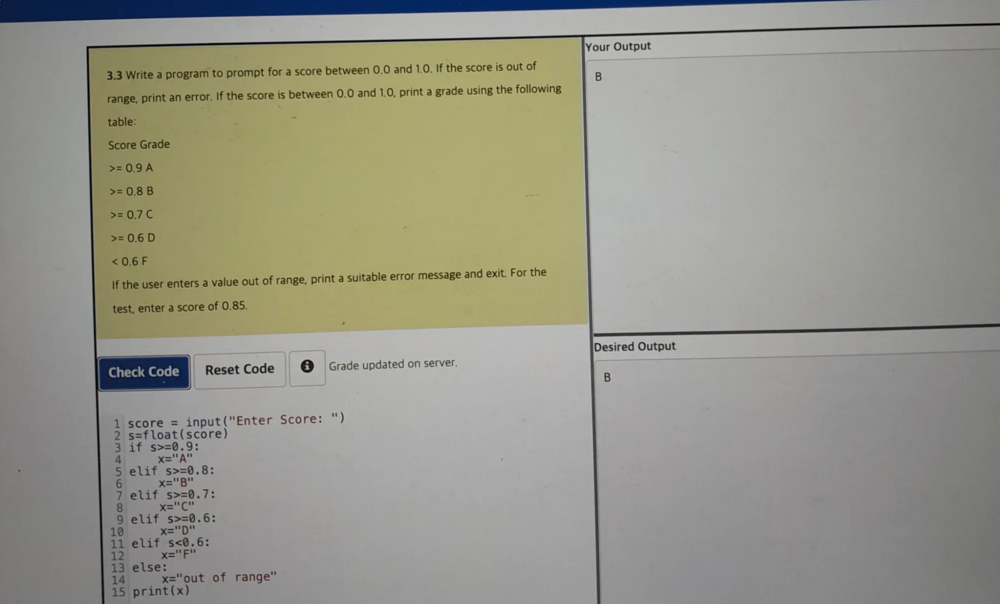
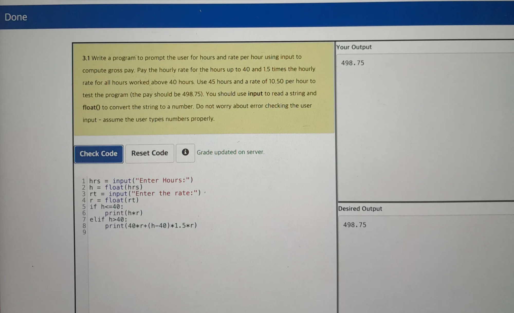
Chapter 4
Functions
Stored and reused steps: functions
Example:
def thing():
→ print("Zip")
thing()
The def statement stores the function. Writing thing() calls the function and runs the stored code.
Max function: max() is a built-in function. It takes some input and produces an output.
big = max("Hello world")
big: variable used for assignment
"Hello world": argument
Building our own function
- We can create a new function by using the def keyword followed by parentheses. The parentheses can contain parameters.
- We indent the body of the function.
- Defining a function does not execute its body. The def statement stores the function, but I must call the function to run the code.
A parameter is a variable used in the function definition. It is a “handle” that allows the code in the function to access an argument when the function is called.
Return values: A function can take arguments, do a calculation, and return a value. The return keyword is used for this.
A “fruitful function” is a function that produces a result or return value.
Argument → Parameter → Result
Multiple parameters and arguments
- We can define more than one parameter in a function.
- When we call the function, the number and order of the arguments should match the parameters.
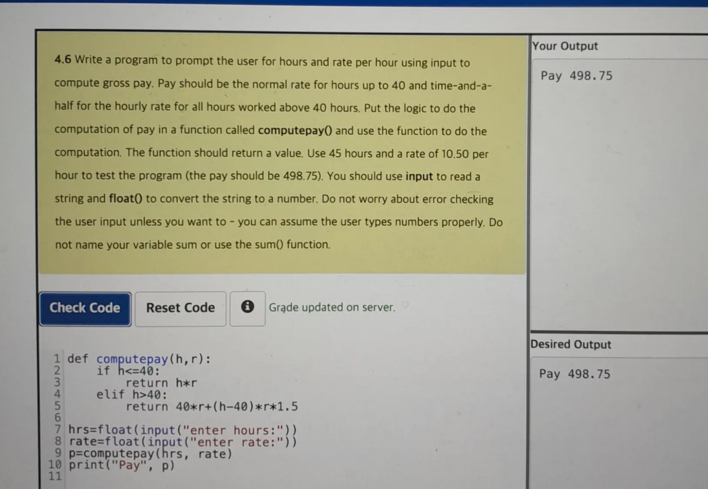
Chapter 5
Loops and Iteration
Repeated steps: Loops have iteration variables that change each time through a loop. These variables often move through a sequence of numbers or other values.
Breaking out of a loop
- The break statement ends the current loop and moves to the statement immediately after the loop.
- It works like a loop test that can happen anywhere inside the body of the loop.
The continue statement ends the current iteration, returns to the top of the loop, and starts the next iteration.
A simple definite loop: A definite loop has an iteration variable that changes each time through the loop. The variable moves through a sequence or set.
A simple definite loop example:
for i in [5, 4, 3, 2, 1]:
→ print(i)
print("Blastoff!")
- The iteration variable moves through the ordered set.
- The indented block of code runs once for each value in the sequence.
- The iteration variable moves through all the values in the sequence.
Making “smart” loops: The idea is to learn something about the whole group of data while the code looks at only one item at a time.
- Set some variables to their starting values.
- For each item in the data, look for something or do something to the item and update a variable.
- Look at the variables after the loop ends.
Finding the largest value: If the current number is larger than the largest value found so far, it becomes the new largest value.
Counting in a loop: To count how many times a loop runs, we use a counter variable that starts at 0. We add 1 to it each time through the loop.
Summing in a loop: To add the values in a loop, we use a sum variable that starts at 0. We add each value to the sum as the loop runs.
Finding the average in a loop: An average combines the counting and summing patterns. After the loop ends, we divide the sum by the count.
Filtering in a loop: We use an if statement inside the loop to find or filter the values we want.
Searching with a Boolean variable: If we only want to know whether a value was found, we can use a variable that starts as False. It changes to True when the value is found.
Finding the smallest value: We can use a variable named smallest_so_far and compare each new value with it. At the beginning, the variable can be None because we have not seen a number yet. The first value then becomes the smallest value found so far.
The is and is not operators
The is operator checks whether two references point to the same object. It is different from ==, which checks whether two values are equal.
The is not operator checks whether two references do not point to the same object.
The is operator is often used with None, such as smallest is None.
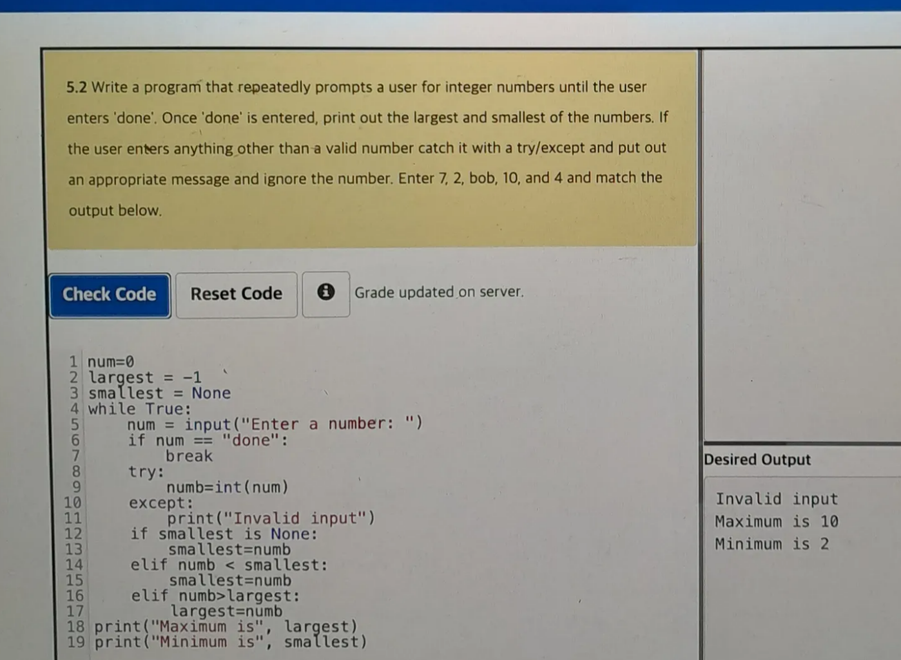
Chapter 6
Strings
We often read data as strings first and then parse and convert the data when needed. This gives us more control over errors or incorrect user input. Numbers entered by a user also begin as strings and must be converted.
Methods for looking inside strings
- We can get one character from a string by using an index inside square brackets.
- The index must be an integer and starts at 0.
- The index can also be an expression that produces an integer.
Python gives an error if we try to use an index beyond the end of a string.
The built-in len() function gives us the length of a string.
string → len() → number
Example:
0 1 2 3 4 5
fruit = "banana"
print(len(fruit))
Result: 6
Looping through strings
By using a while statement, an iteration variable, and the len() function, we can look at each letter in a string.
fruit = "banana"
index = 0
while index < len(fruit):
→ letter = fruit[index]
→ print(index, letter)
→ index = index + 1
A definite loop using for is simpler because the for loop takes care of the iteration variable.
The following loop goes through each letter in a string:
fruit = "banana"
for letter in fruit:
→ print(letter)
The following loop counts how many times the letter “a” appears:
word = "banana"
count = 0
for letter in word:
→ if letter == "a":
→ → count = count + 1
print(count)
Slicing strings
- We can look at a continuous part of a string by using a colon.
- The second number is one position beyond the end of the slice.
- If the second number is beyond the end of the string, Python stops at the end.
Example:
s = "Monty Python"
print(s[0:4])
Result: Mont
It starts at position 0 but does not include position 4.
String concatenation
When the + operator is used with strings, it means concatenation.
Example:
a = "hello"
b = a + "There"
print(b)
Result: helloThere
Using in as a logical operator
The in keyword checks whether one string appears inside another string. It returns True or False and can be used in an if statement.
Example:
fruit = "banana"
"n" in fruit
Result: True
String comparison example
if word == "banana":
→ print("All right, bananas.")
elif word > "banana":
→ print("Your word, " + word + ", comes after banana.")
String methods
Example:
greet = "hello bob"
zap = greet.lower()
print(zap)
Result: hello bob
Python has many methods that are built into strings. These methods do not change the original string. Instead, they return a new string that has been changed.
Examples of string methods:
str.capitalize()
str.center(width, fillchar)
str.endswith(suffix)
str.find(sub)
str.lstrip()
str.replace(old, new)
str.lower()
str.rstrip()
str.strip()
str.upper()
Searching a string
We use find() to search for a substring inside another string. It finds the position of the first occurrence. If the substring is not found, find() returns -1. String positions start at 0.
Uppercase and lowercase example
greet = "Hello Bob"
nnn = greet.upper()
print(nnn)
Result: HELLO BOB
www = greet.lower()
print(www)
Result: hello bob
Search and replace
The replace() method works like “search and replace” in a word processor. It replaces occurrences of one string with another string.
greet = "Hello Bob"
nstr = greet.replace("Bob", "Jane")
print(nstr)
Result: Hello Jane
Stripping whitespace
lstrip() removes whitespace from the left side.
rstrip() removes whitespace from the right side.
strip() removes whitespace from both sides.
Prefixes
line = "Please have a nice day"
line.startswith("Please")
Result: True
line.startswith("p")
Result: False
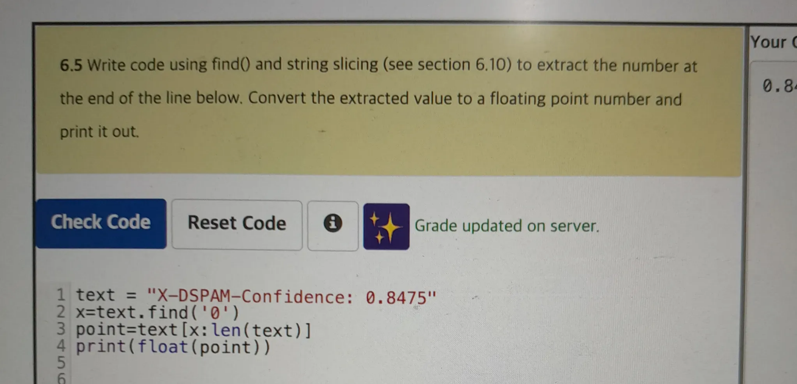
Chapter 7
Files
Using open()
Basic form: open(filename, mode)
Example:
fhand = open("mbox.txt", "r")
The open() function returns a file handle that we can use to work with the file.
The filename is a string.
The mode is optional. We use "r" when we want to read a file and "w" when we want to write to a file. If we do not give a mode, Python normally opens the file for reading.
The newline character
- We use a special character called a newline to show where a line ends.
- We write it as \n inside a string.
- A newline is still one character.
Example:
stuff = "hello\nworld!"
print(stuff)
Result:
hello
world!
A text file usually has a newline at the end of each line.
File handle as a sequence
A file handle opened for reading can be treated as a sequence of strings. Each line in the file is one string in the sequence. We can use a for statement to go through the lines.
Counting lines in a file
We can open a file for reading, use a for loop to read each line, count the lines, and print the total.
fhand = open("mbox.txt")
count = 0
for line in fhand:
→ count = count + 1
print("Line Count:", count)
Reading the whole file
We can use read() to read the whole file, including its newline characters, into one string.
Skipping with continue
We can use continue to skip lines that we do not want.
fhand = open("mbox-short.txt")
for line in fhand:
→ line = line.rstrip()
→ if not line.startswith("From:"):
→ → continue
→ print(line)
My Chapter 7 practice reading text files, changing text to uppercase, and calculating an average from selected lines
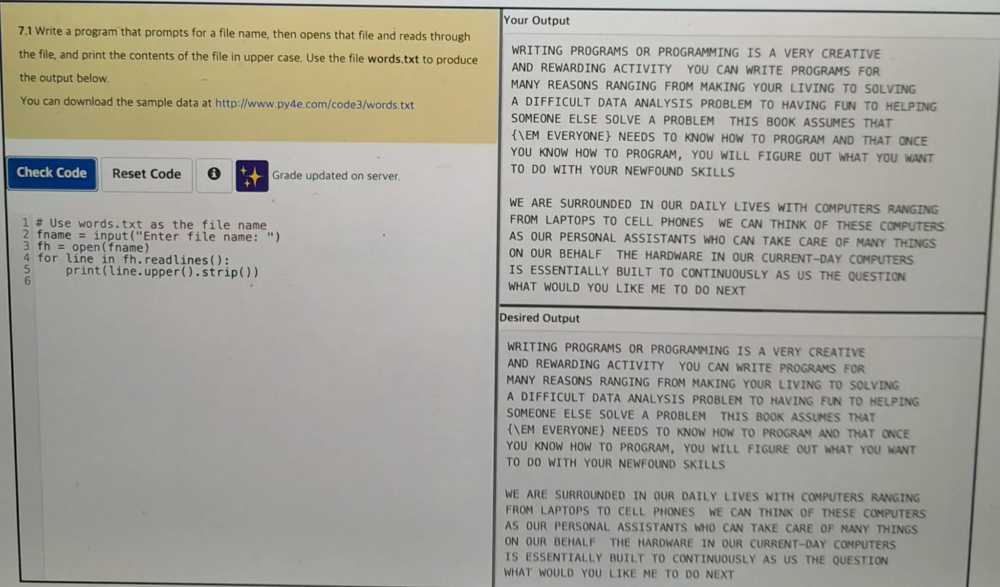
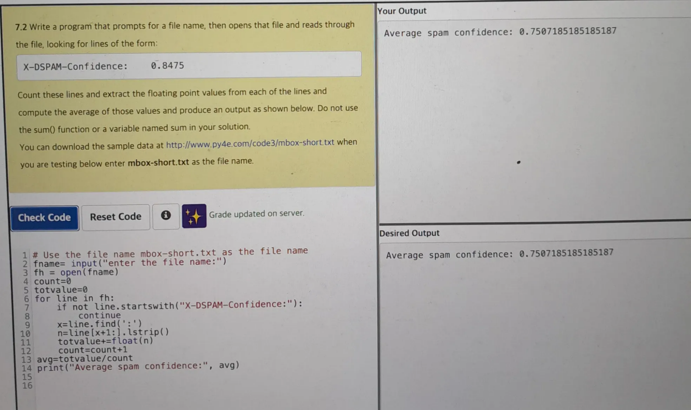
Chapter 8
Lists
Algorithm: a set of rules or steps used to solve a problem.
Data structure: a way of organizing data in a computer.
Most variables hold one value. When we put a new value into the variable, the old value is replaced.
A collection allows us to put many values into one variable.
Example of a collection:
friends = ["Joseph", "Glenn", "Sally"]
- List constants are surrounded by square brackets.
- The elements in a list are separated by commas.
- A list element can be any Python object.
- A list can also be empty.
- A list can contain strings, numbers, or other kinds of values.
We can get one element from a list by using an index inside square brackets.
- Strings are immutable. We cannot change the contents of a string. We must make a new string to make a change.
- Lists are mutable. We can change an element in a list by using its index.
The len() function takes a list and returns the number of elements in it. It can also give the length of other sequences.
The range() function produces a sequence of numbers from 0 to one less than the number we give it. We can use range() with a for loop and an integer index.
Concatenating lists using +
a = [1, 2, 3]
b = [4, 5, 6]
c = a + b
print(c)
Result: [1, 2, 3, 4, 5, 6]
Slicing lists
t = [9, 41, 12, 3, 74, 15]
print(t[1:3])
Result: [41, 12]
Building a list
To build a list from the beginning, we can create an empty list and add elements by using append(). The list keeps its order, and new elements are added at the end.
stuff = list()
stuff.append("book")
stuff.append(99)
print(stuff)
Result: ["book", 99]
Python has two operators that check whether an item is in a list: in and not in. They return True or False and do not change the list.
Sorting a list
A list keeps its items in order until we change the order. The sort() method changes the list by putting its items in sorted order.
friends = ["Joseph", "Glenn", "Sally"]
friends.sort()
print(friends)
Result: ["Glenn", "Joseph", "Sally"]
print(friends[1])
Result: Joseph
Using len() and sum()
The len() function gives the number of items in a list.
avg = sum(num) / len(num)
Using split()
The split() method breaks a string into parts and produces a list of strings. We can get one word from the list or use a loop to go through all the words.
abc = "with three words"
stuff = abc.split()
print(stuff)
Result: ["with", "three", "words"]
When we do not give split() a delimiter, several spaces are treated like one separator. We can also tell split() which character to use as the delimiter.
Double split pattern: Sometimes we split a line one way, select one part of the line, and then split that part again.
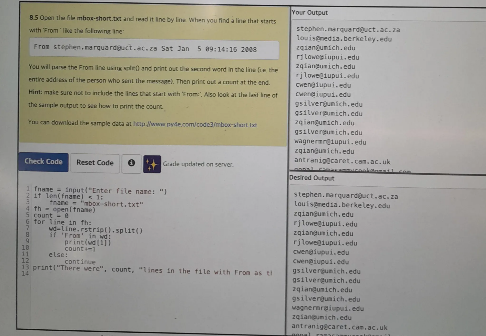
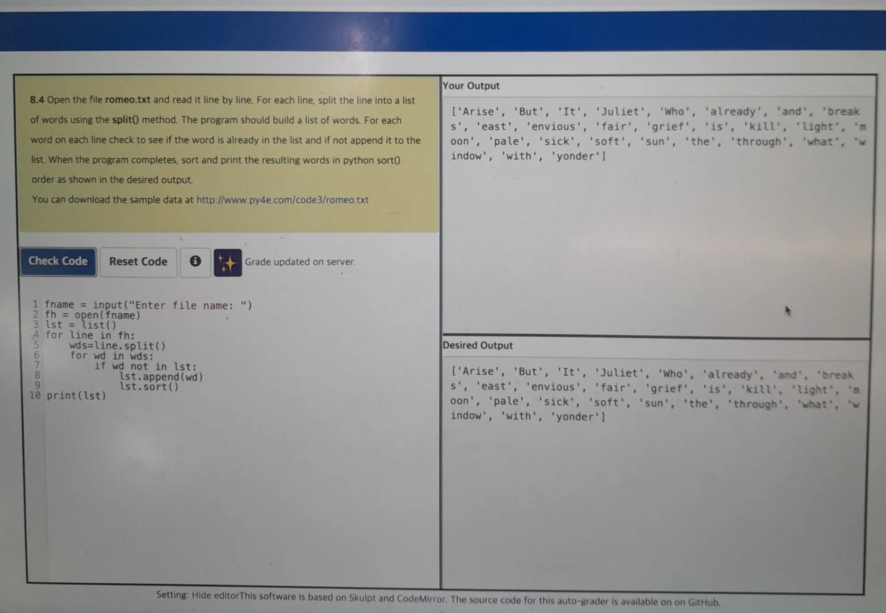
My Chapter 8 practice using lists to collect and sort words, and using split() to find information in lines from a file.
Chapter 9
Dictionaries
Collections allow us to keep more than one value in one variable. They also give us ways to find the different values.
Two types of collections
- List: a collection of values stored by position
- Dictionary: a collection of key-value pairs
A dictionary allows us to do fast database-like operations in Python.
Similar concepts in other programming languages
- Associative arrays: Perl/PHP
- Maps or hash maps: Java
- Property bags: C#/.NET
Before Python 3.7, dictionaries did not always keep entries in the order they were added. Python 3.7 and later preserve the insertion order. However, the insertion order is not always the sorted order.
Python lists, dictionaries, and tuples are objects designed to be easy to use.
- We add values to a list and find them by their position.
- We add values to a dictionary with a key and find them again by using that key.
Dictionaries are similar to lists, but they use keys instead of position numbers.
Counting with a dictionary
One common use of a dictionary is counting. When we see a new name, we add it to the dictionary with a count of 1. If we see the same name again, we add 1 to its count.
Example:
counts = dict()
names = [“csev,” “cwen,” “csev,” “zqian,” “cwen”]
for name in names:
→ if name not in counts:
→ → counts[name] = 1
→ else:
→ → counts[name] = counts[name] + 1
print(counts)
The get() method
The get() method checks whether a key is already in the dictionary. If the key is not there, it gives us a default value.
Simplified counting example:
counts = dict()
names = [“csev,” “cwen,” “csev,” “zqian,” “cwen”]
for name in names:
→ counts[name] = counts.get(name, 0) + 1
print(counts)
Counting words
A common way to count words is:
- Split a line of text into words.
- Go through the words with a loop.
- Use a dictionary to keep the count for each word.
Loops and dictionaries
We can use a for loop to go through a dictionary. The loop goes through the keys, and we can use each key to find its value.
Example:
counts = {“chuck”: 1, “fred”: 42, “jan”: 100}
for key in counts:
→ print(key, counts[key])
Output:
chuck 1
fred 42
jan 100
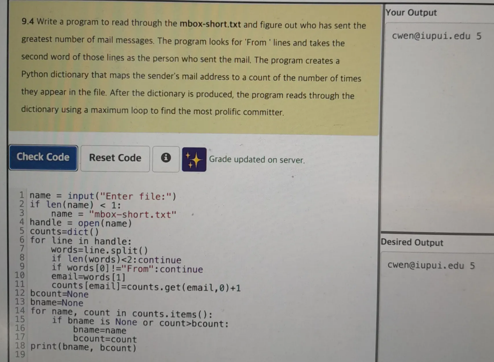
My Chapter 9 practice using a dictionary to count email senders and find the person who appeared most often.
Chapter 10
Tuples
Tuples are another kind of sequence. They work like lists because their elements have positions starting at 0. However, tuples cannot be changed after they are created. In this way, they are similar to strings.
- Tuples are simpler than lists because Python does not need to make them changeable.
- They can be useful for temporary values.
- We can put a tuple on the left side of an assignment statement.
- We can leave out the parentheses in some cases.
- The items() method in a dictionary gives us key-value pairs as tuples.
Comparing tuples
Tuples can be compared. Python first compares the first element. If the first elements are equal, it moves to the second element. It continues until it finds a difference.
Examples:
(0, 1, 2) < (5, 1, 2)
True
(0, 1, 2000000) < (0, 3, 4)
True
(“Jones,” “Sally”) < (“Jones,” “Sam”)
True
(“Jones,” “Sally”) > (“Adams,” “Sam”)
True
Sorting lists of tuples
We can use tuples to make a sorted version of a dictionary. The items() method gives us the key-value pairs, and the sorted() function puts them in order.
Sorting by values instead of keys
If we make tuples in the form of (value, key), we can sort a dictionary by its values. We can use a for loop or list comprehension to create these tuples.
Example:
c = {“a”: 10, “b”: 1, “c”: 22}
print(sorted([(v, k) for k, v in c.items()]))
Output:
[(1, “b”), (10, “a”), (22, “c”)]
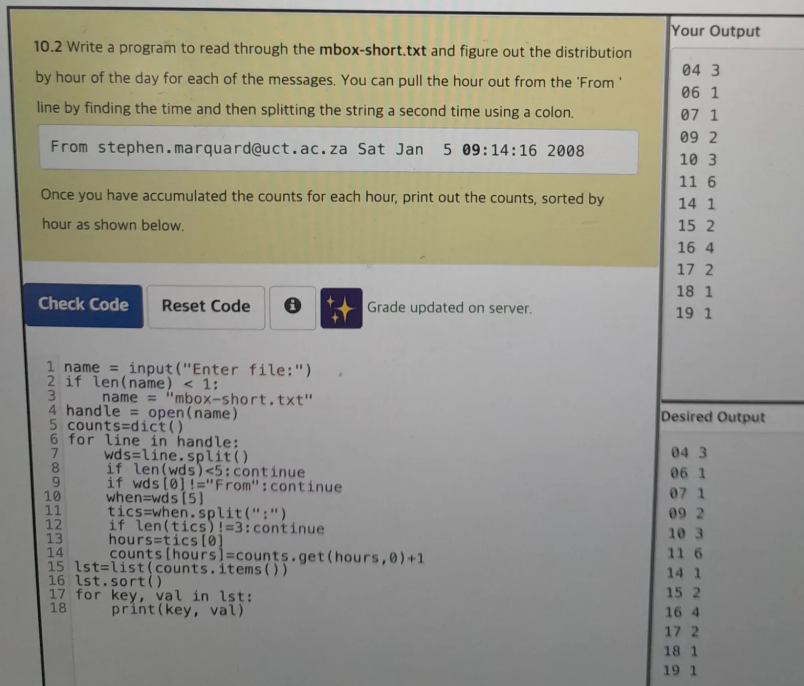
My Chapter 10 practice using tuples and a dictionary to count messages by hour and put the results in time order.
4. Apps for the Global Mindfulness Hub
Four ways to pause and practice
I wanted visitors to the Global Mindfulness Hub to do something, not only read information. The Hub includes four small mindfulness activities: Breath Counting, Body Scan, Lotus, and Quiet Time.
None of these activities gives a score or measures a person’s ability. I wanted them to be simple places where someone could pause, pay attention, and practice for a few minutes. This was closer to what I had originally hoped to make: interactive experiences that could help someone slow down, rather than tools that only explain a fact about the mind.
The same main activities appear in both the Adults and Youth areas, but I changed some of the introductions and guides. I wanted the words around an activity to make sense for the people using that part of the website.
How I built and tested them
After completing my basic Python courses, I began building the activities with help from Claude and Claude Code. I did not write all of the code by myself. I explained what I wanted each activity to do, tested each version, and asked for changes when something did not work or did not make sense.
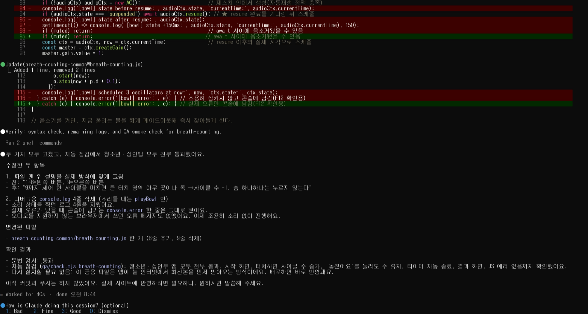
I tried each activity myself. I checked whether the buttons worked, whether the instructions were clear, and whether the activity ended in the way I expected. I also sometimes asked another person to try an activity. This helped me notice problems that I had not seen when I tested it alone.
The four Practice activities
The Practice section contains Breath Counting, Body Scan, Lotus, and Quiet Time. Unlike the other activities I originally explored, these do not measure speed, accuracy, or memory.
For Breath Counting, I made a screen that a person can tap while counting breaths. Body Scan guides attention through different parts of the body. Lotus uses the image of a lotus for a kindness and gratitude activity. Quiet Time uses a slowly changing scene to give the person something simple to stay with.
I did not invent these mindfulness practices. My work was deciding how they could become small interactive experiences without adding a score, ranking, or comparison. I did not design the Hub to ask for names, email addresses, or personal responses. These activities were closer to the original reason I wanted to make the project.
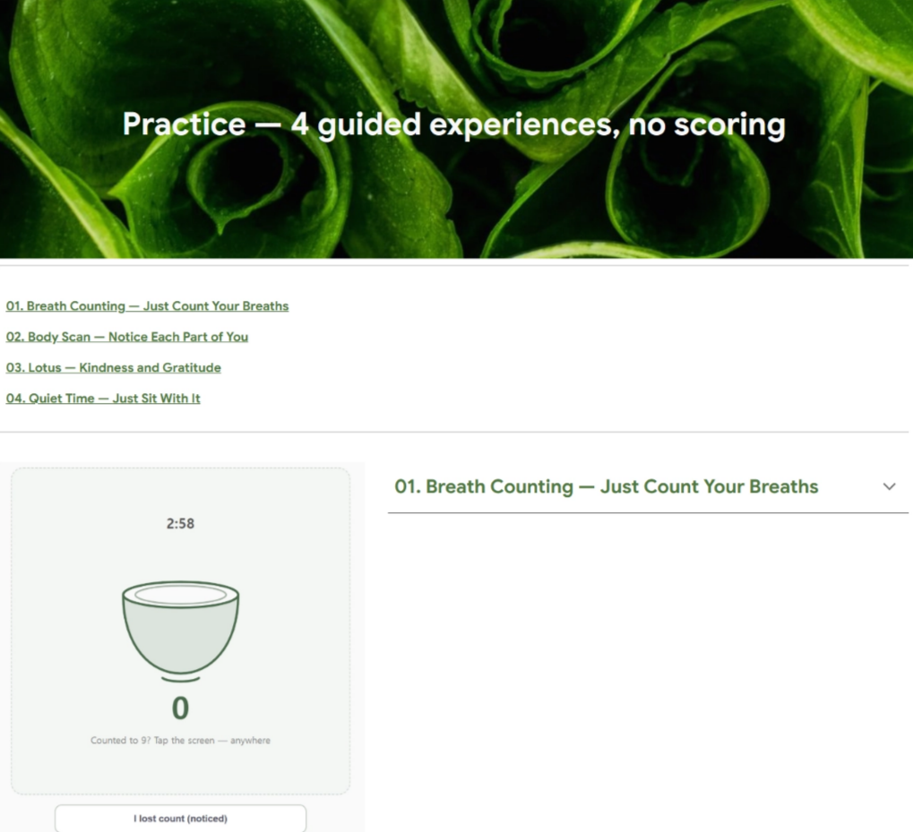
5. SAT vocabulary app
I began an early version during the Education App Building study in spring 2026. At that time, I decided that the same word should appear in several kinds of questions instead of only one flashcard. I returned to the project later and expanded it into the current version.
During the summer of 2026, I was also busy with a research internship, a pre-college class, AP assignments, and a leg injury. I could not always sit down and study for a long time, so I wanted something that I could use during small breaks.
I had used free study tools such as Quizlet, but I wanted to organize the words in a different way. I first focused on 500 words with multiple meanings. I noticed that knowing only the most common meaning of a word was not always enough for an SAT question. I made a four-step quiz so that I could meet the same word through context, synonyms, antonyms, and less obvious clues.
Later, I added a general vocabulary section because I also wanted to learn basic SAT words more carefully. The current version has two main sections: a general section with 991 SAT words divided into four parts, and a separate four-step quiz focused on 500 words with multiple meanings. It includes flashcards, two types of multiple-choice questions, fill-in-the-blank questions, spelling practice, and a random mix. When a user gets a word wrong or selects “Didn’t Know,” the app adds it to a missed-word list. The user can then review only those words with flashcards or another quiz. In the general vocabulary section, a word leaves the list after the user answers it correctly twice.
I did not use the app as regularly as I had hoped. Sometimes I now think that I should have opened it one more time during those short breaks. Still, making and using it helped me study. After school began, I shared the link with some classmates and younger students. Their reactions were more positive than I expected, and some of them said that they liked the different study modes. This was the first time I saw that a tool I had made for my own problem could also be useful to other students.
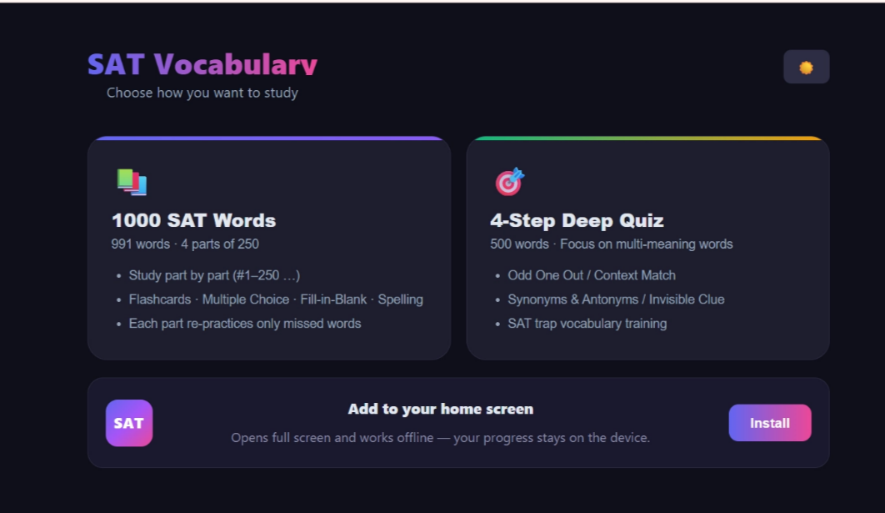
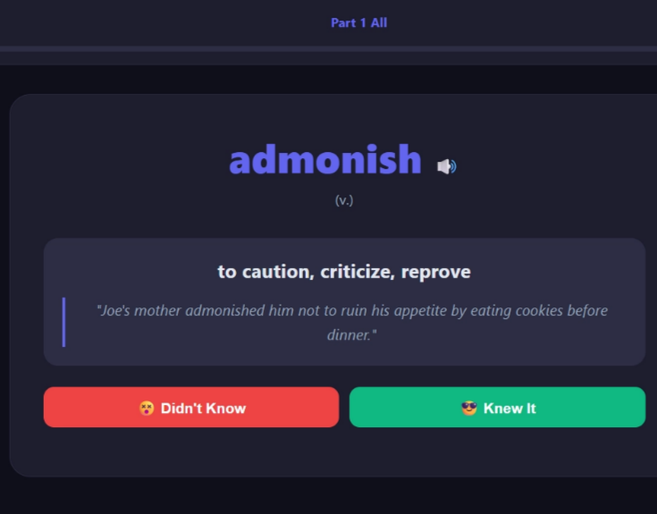
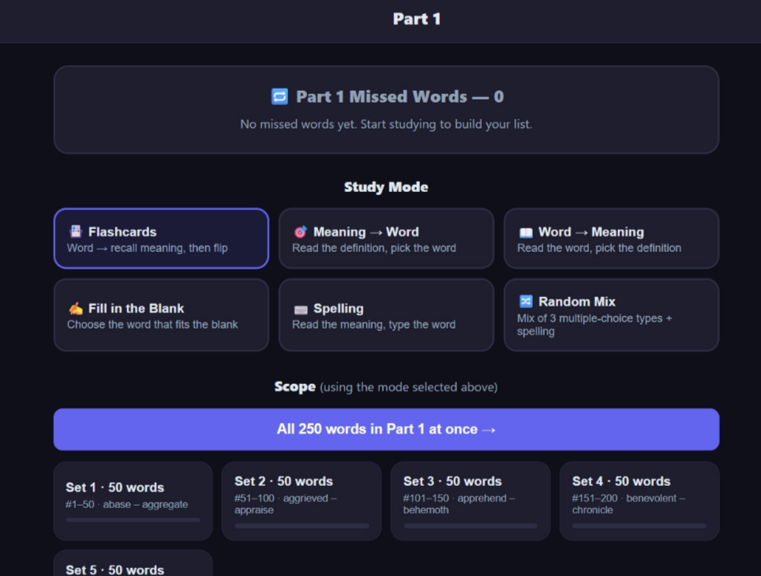
How I built and changed it
The first version used four steps for 500 words with multiple meanings.
I explained the structure and features I wanted to Claude and used Claude Code to help build the app. I did not write all of the code by myself. I chose how the learning steps should work, tried each version, found problems, and asked for changes. I later added pronunciation, a missed-word list, dark and light modes, and buttons for moving between words and stages.
Moving the word files into the project was more difficult than I expected. At first, I tried to send the data directly from Claude to Claude Code, but it did not work. I saved the files and moved them into the project myself. Publishing the app was also confusing. I first tried Vercel, but I found the publishing steps difficult. Later, I put the project on GitHub and published the current version from there.
The app slowly became larger than my first plan. I added the general word list, more study modes, and a way to save missed words and progress on the device.
One of my favorite changes was adding an Install button. A user could add the app to a phone’s home screen, open it like a regular app, and use it offline. When I first installed it on my own phone, it looked much more like a real app than a webpage. This small change made the project feel more complete to me.
Some changes worked quickly, while others caused a new error somewhere else. I could make and revise the app with AI assistance, but I did not always understand why the code worked or stopped working. Even after taking the Python courses, these problems reminded me that I still needed to learn more about programming.
6. LINE UP
A. Why I made it
My whole family likes Son Heung-min. When he played in England, we sometimes watched his matches together at home. I enjoyed watching soccer before I began playing it at school.
I joined school soccer in tenth grade and continued in eleventh grade. I spent much of that time on the bench, but I was still part of the team.
During the summer after eleventh grade, I began making this app while thinking about my final year of high school. I planned to apply for a student sports manager position, and I thought I could use the app to support the team if I was selected.
In twelfth grade, I applied for the manager position. If I was not selected, I planned to return as a regular player, as I had done before. However, the teacher overseeing the sports program changed that term, and the school offered fewer sports activities and places than before. More students applied for the limited places, and I was not selected as a manager or as a player. I was very disappointed because I had expected to spend my final year with the team.
By that time, I had already made much of the app, so I continued working on it. I shared the link with some friends in my dorm and with Mr. Brooks, the team coach.
I did not want the app to be only a list of players. I wanted team members to check in, encourage one another, follow a short stretching routine, and try small soccer challenges. The app became another way for me to think about how someone could take part in a team, even when that person was not playing on the field.
B. What the app does
A player enters the app using a jersey number instead of a real name. The main page has a private mood check-in and a short team stretching activity. The mood stays only on that player’s device. Other people can see only the total number of team members who checked in that day.
I also made separate entrances for players and the coach. The app asks which role the person has, and the player and coach areas use different passwords and show different screens. Students can send a message to Mr. Brooks about soccer or something related to the team without adding their names. He can read these messages on the coach screen without seeing which student sent them. The coach screen also shows weekly check-in and warm-up counts and the team schedule.
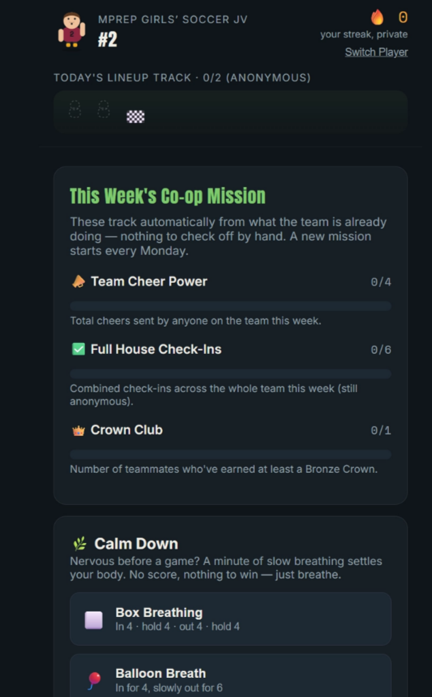
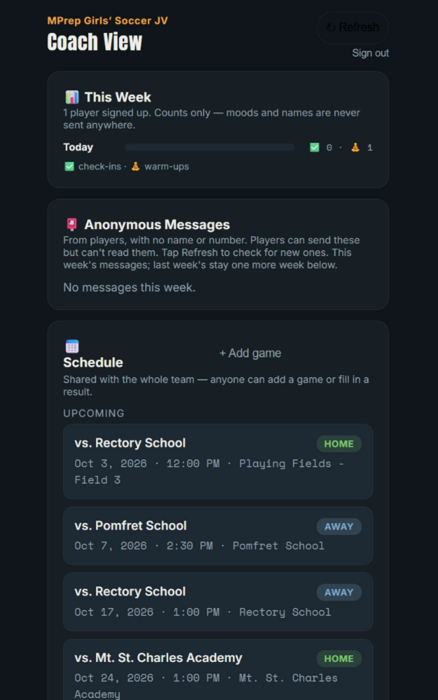
Players can send short cheers to one another and build a personal streak. The app also has a weekly team mission based on check-ins and cheers. I added two short breathing activities for nervousness before a game.
The Team Stretch section has ten movements. A player can choose only a few or complete more of them. A character shows each movement while a voice explains what to do. The first voice sounded too much like a machine, so I later changed it to a more natural voice.
Our school mascot is the Knight, and it also appears on our athletic uniforms. This was why I called the small soccer game Knight’s Quest. The game has four levels that open one at a time.
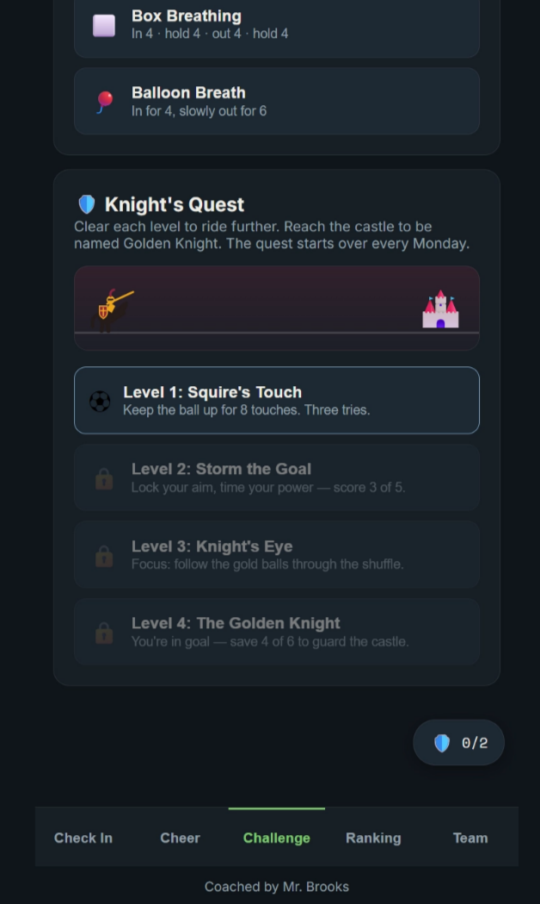
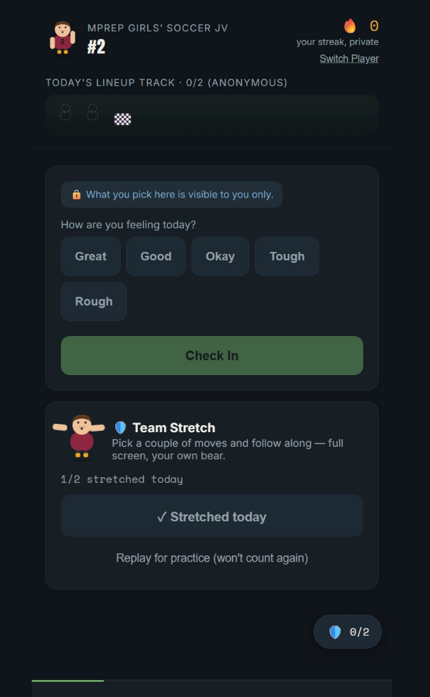
C. Sharing team activity across phones
Most of the small apps I had made before saved information only on one device. I had wanted to learn how to connect an app to a shared database, and this project gave me a reason to try.
I wanted LINE UP to be easy to open on a phone. A cheer sent from one phone needed to appear on another phone, and everyone needed to see the same team check-in total. I connected the app to Supabase so that this information could be shared instead of remaining on only one person’s device.
Before sharing the app, I tested the check-ins, cheers, messages, and other functions many times. These tests left practice records in the shared data, so I cleared them before sending the app to other people. This allowed the students and Mr. Brooks to begin with a clean version instead of seeing my test records.
I sent the link to Mr. Brooks, the team coach, and to soccer players who lived in my dorm. When they opened the app on their phones, we could see one another’s team activity appear. I had only seen my own information in the apps I made before, so watching information move between different phones felt surprising to me.
At the same time, I did not want every kind of information to be shared. A player’s mood and personal streak stay only on that person’s device. The database receives the team check-in total, cheers, and other team activity, but it does not receive the individual mood choice.
7. What I learned
Vibe coding made me less afraid of turning an idea into something that worked. Before joining GPTers, I did not think that I could make an app. Later, I was able to choose the purpose and structure of a project, test each version, find problems, and keep asking for changes.
However, I did not write all of the code by myself. When something stopped working, I could describe the problem, but I did not always understand what had caused it. This limitation made me want to learn basic programming more seriously. Studying Python helped me begin to understand some of the logic behind the tools I had been using.
I also learned that making an app was not just about adding more features. I needed to think about privacy, whether people might misunderstand the results, and whether each idea was safe and useful. Sometimes I decided that it was better to remove an idea than to finish it.
I still have much more to learn about programming and about the science behind some of my activities. In the future, I would like to use these tools more carefully in cognitive science research. I also hope to find ways to present research through interactive or media art, so that people can experience an idea instead of only reading about it.